← 回到气脉陪练跟着视频，记住每一式的路线
本次依据你提供的 plus(1).mp4 校对。视频长 13 分 13 秒，片头署名：天津中医药大学体育健康学院。下列截图和时间点来自这份视频。
刘看山保留原来的分段练习方式与两轮练习，属于动画示意，动作幅度按舒适范围调整；不是原视频的逐秒复制。坐姿课程仍是单独的上半身改编。
视频提示自然呼吸，因此本次站姿口令采用自然呼吸，不额外编造每一步的固定吸吐配对。掌心、手指、握固、掩耳与轻叩属于学习提示，摄像头不对这些细节作达标认证。
韦驮献杵第一势
原片段落 00:51–01:05 · 截图 01:00
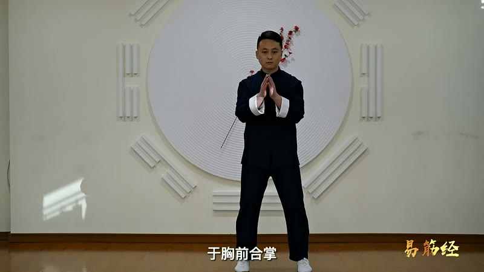
- 左脚侧开半步，两脚平行站稳
头颈自然立起，肩膀放松。 - 两臂从前方抬起，在胸前轻轻合掌
掌心轻合，肘部自然下沉，腋下留出空间。 - 保持胸前合掌，目光看向前下方
手掌轻合，不用挤压；保持自然呼吸。 - 保持松肩合掌，准备下一势
这一势以胸前合掌结束，不急着把手放下。
韦驮献杵第二势
原片段落 01:05–01:31 · 截图 01:20
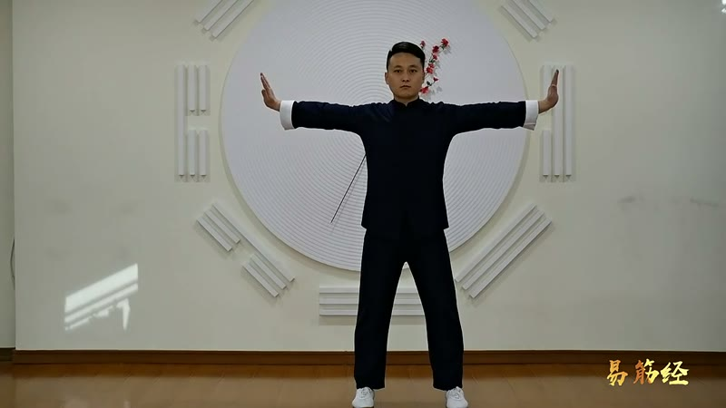
- 抬肘，两臂向前平伸
两手分开，沿肩部高度向前伸出。 - 双臂沿水平方向向两侧展开
沿水平路线展开，不绕到头顶。 - 坐腕立掌，双臂保持平展
手指朝上，肩膀放松，避免用力锁肘。 - 松腕松肘，双臂水平收向前方
两臂沿来路内收，双手保持分开。
韦驮献杵第三势
原片段落 01:31–01:53 · 截图 01:44
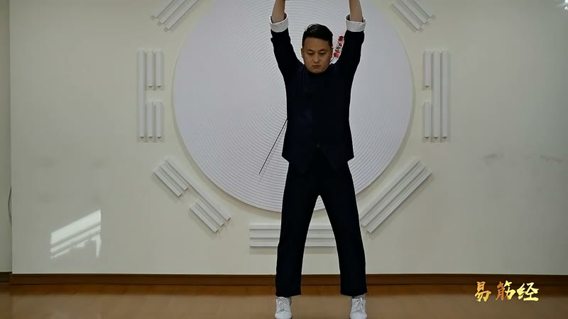
- 翻掌，屈肘收至耳侧附近
两掌翻向上，准备从头部两侧上举。 - 双掌向上托举，指尖相对
掌心向上，手臂在舒适范围内伸展。 - 站稳后轻提脚跟，继续向上托掌
先保持平衡；不稳时脚跟留在地面。 - 两手握拳，双臂缓缓下落
脚跟轻落，松肩回到站立位置。
摘星换斗势
原片段落 01:53–02:18 · 截图 02:04
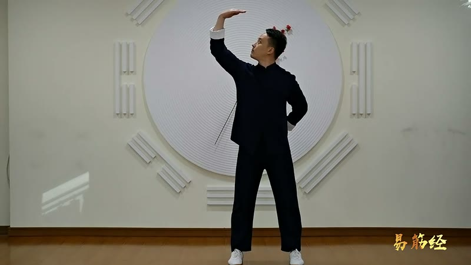
- 转身，一手向上托掌，另一手贴背
按画面方向伸展，目光随上举的手；不要挺腹。 - 放松回正，两臂自然平展
上举的手缓缓放下，另一手从背侧展开。 - 换向转身，交换上托与贴背的手
两侧交替做，动作轻缓，保持站稳。 - 放下双臂，准备前后开步
松肩，平稳衔接下一势。
倒拽九牛尾势
原片段落 02:18–03:20 · 截图 02:31
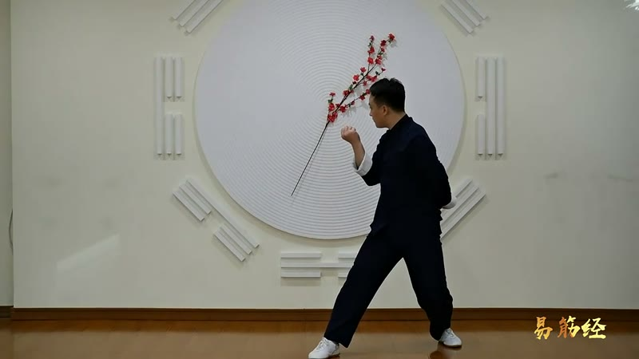
- 前后开步，双手握拳，前手缓缓回拽
前腿轻屈，前臂屈肘牵引，后臂向后伸展。 - 前后双臂缓缓展开，再舒展一次
保持前后脚稳定，双拳不必用力攥紧。 - 换脚转身，换侧握拳牵引
换侧前先站稳，再把前手缓缓回拽。 - 双臂前后展开，完成这一侧
回拽与展开连贯完成，保持自然呼吸。
出爪亮翅势
原片段落 03:20–04:27 · 截图 03:34
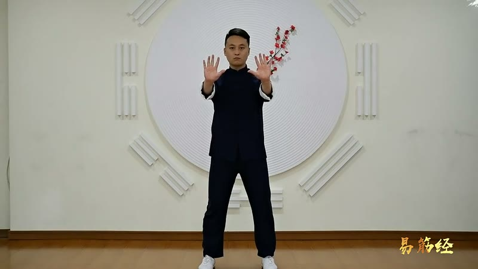
- 展肩扩胸，两手收至胸前立掌
双掌分开、掌心向前，这里不做合掌。 - 双掌缓缓向前推出
手指舒展，肩膀放松，避免屏气用力。 - 松腕放松，双掌保持前伸
先放松，再准备收回，不必僵硬撑住。 - 屈肘收回，在胸前重新立掌
两手保持分开，回到下一次推掌的起点。
九鬼拔马刀势
原片段落 04:27–06:12 · 截图 04:54
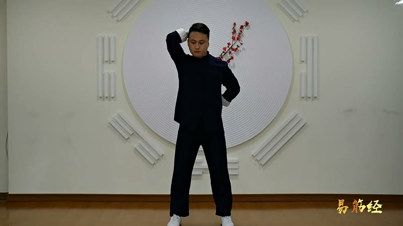
- 转身抡臂，一手绕头拨耳，另一手贴背
头后手轻贴，背侧手放松，不拉扯颈部。 - 两肘缓缓合拢，上体随之轻缓前俯
先展再合；幅度小一点，不用手压头。 - 转正展开双臂，换侧绕头贴背
先回正，再交换两只手的位置。 - 换侧做肘部开合，随动作轻缓俯身
肘部开合与上体动作配合，保持自然呼吸。
三盘落地势
原片段落 06:12–07:05 · 截图 06:20
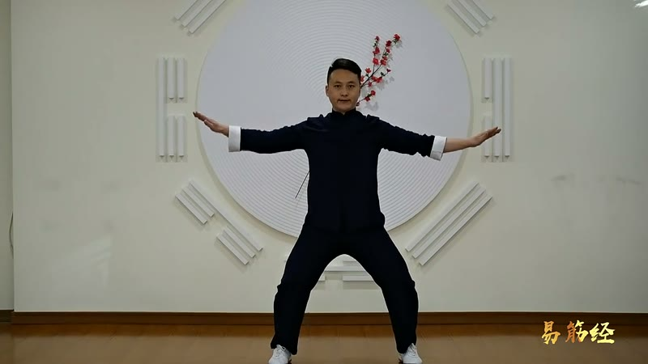
- 双臂侧平举，掌心向下，开步站稳
两脚适当分开，先稳住再下蹲。 - 缓缓屈膝下落，两掌向下按
膝盖沿脚尖方向，蹲到自己能控制的位置。 - 翻掌向上，像捧起物品一样缓缓起身
上捧与起身连贯，不急着弹起。 - 起身后翻掌向下，两臂回到侧平举
肩膀保持放松，准备下一次下落。
青龙探爪势
原片段落 07:05–08:10 · 截图 07:23
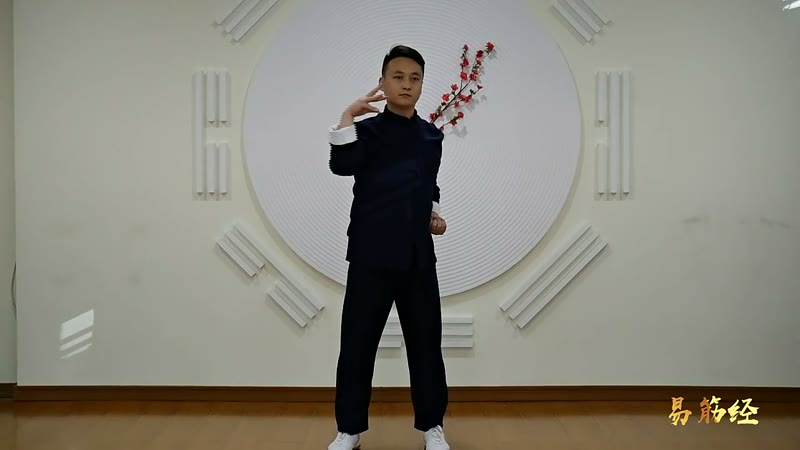
- 双手握固收腰，右手松开，向左探掌
探掌越过身体中线，另一拳留在腰间。 - 掌向下按，前俯划弧，再握固收腰
探、按、划弧、回收连贯完成，幅度以舒适为准。 - 换左手松开，向右侧探掌
身体随手轻缓转动，另一拳仍留在腰间。 - 换侧下按划弧，起身收拳于腰间
起身保持缓慢，不用惯性甩动手臂。
卧虎扑食势
原片段落 08:10–08:55 · 截图 08:28
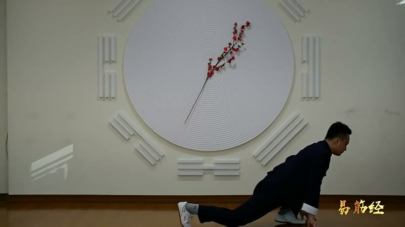
- 扣脚转身，收成丁步，双手握固
先站稳，再准备向前迈步。 - 前迈成弓步，双手前扑，俯身下按
手随身体向前下方伸；不必勉强触地。 - 缓缓起身握固，转身换侧成丁步
先恢复平衡，再准备换腿前迈。 - 换侧前扑俯身，两掌缓缓下按
前后脚站稳，保持自然呼吸。
打躬势
原片段落 08:55–10:32 · 截图 09:34
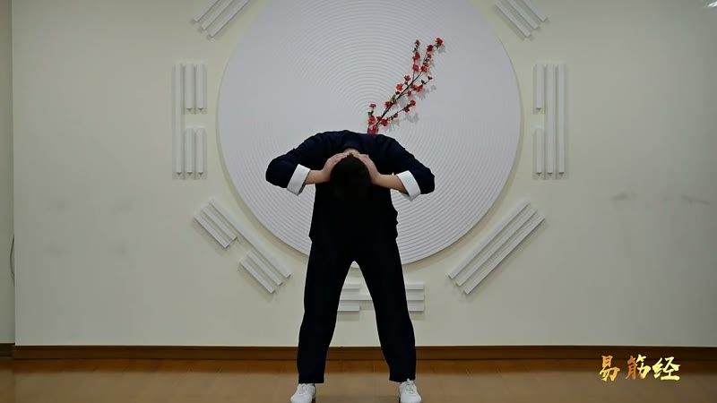
- 双臂从两侧抬起，两掌轻掩耳侧
手指轻贴枕后，可轻叩；不要拉压颈部。 - 上体缓缓前屈，双手保持轻贴
手肘随身体自然收合，不用力拉头。 - 缓缓伸展起身，保持肩颈放松
沿来路慢慢起身，避免突然抬头。 - 再次缓慢前屈，停在舒适的位置
保持自然呼吸；结束时再沿来路起身。
掉尾势
原片段落 10:32–11:52 · 截图 10:50
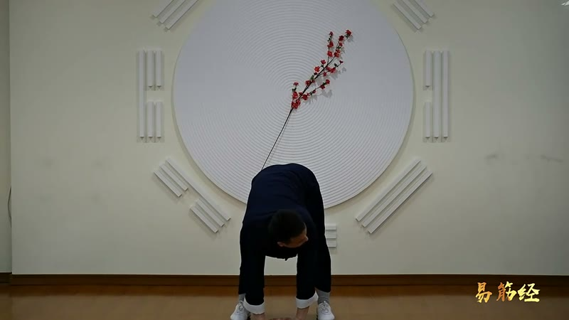
- 十指交叉翻掌外撑，再内收下按、缓缓前俯
上体下降时双手下探，停在自己稳定的位置。 - 保持前俯，轻轻向左摆尾，再回中间
双手位置尽量稳定，头与髋部轻缓配合。 - 身体仍保持前俯，换向右侧轻缓摆尾
左右摆转之间不站起来，摆幅以舒适为准。 - 转正慢慢起身，两臂上抱，再缓缓下引
自然呼吸，双手轻落后，回到松静站立。
收势
原片 11:52–12:55：两臂上抱、缓缓下引，最后收脚并拢，两臂自然下垂。原片有多次重复；分段练习保留一次收势路线。结束时恢复松静站立与自然呼吸。